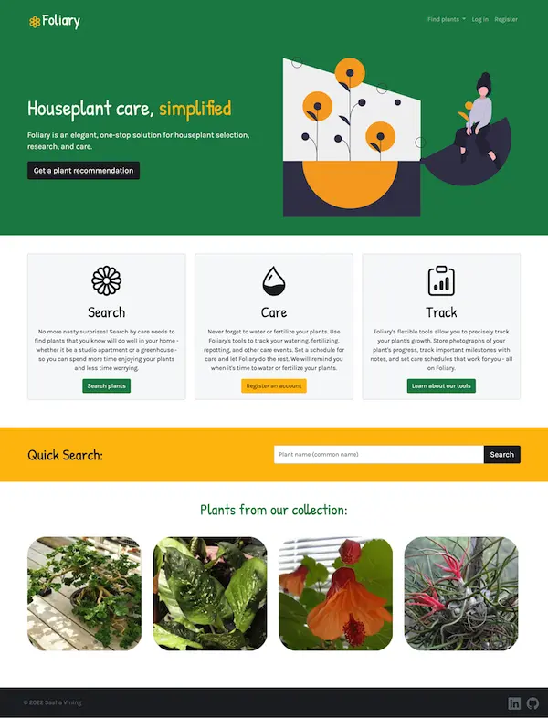

Foliary
Full-stack houseplant care app. Users can search for plants by care needs; be recommended similar plants to ones they already own; create a user profile and track plant care.
tools used: MongoDB, Express, Node.js, JavaScript, REST API, Passport.js, HTML, CSS

 I am passionate about crafting accessible, mobile-responsive full stack web applications. The focus of my freelance web design work has been building homepages for small, local businesses and small-to-medium sized nonprofits. I love hearing about your organization’s needs and crafting a website to meet your goals. The power of a well-crafted website to drive engagement and donations to worthy causes has made my work with nonprofits particularly rewarding. I am proficient in CSS, HTML, JavaScript (ES6+), and React. I have also recently built websites in Wordpress and Shopify. I would love to set up a consultation to discuss an approach and platform that would work best for you.
I am passionate about crafting accessible, mobile-responsive full stack web applications. The focus of my freelance web design work has been building homepages for small, local businesses and small-to-medium sized nonprofits. I love hearing about your organization’s needs and crafting a website to meet your goals. The power of a well-crafted website to drive engagement and donations to worthy causes has made my work with nonprofits particularly rewarding. I am proficient in CSS, HTML, JavaScript (ES6+), and React. I have also recently built websites in Wordpress and Shopify. I would love to set up a consultation to discuss an approach and platform that would work best for you.